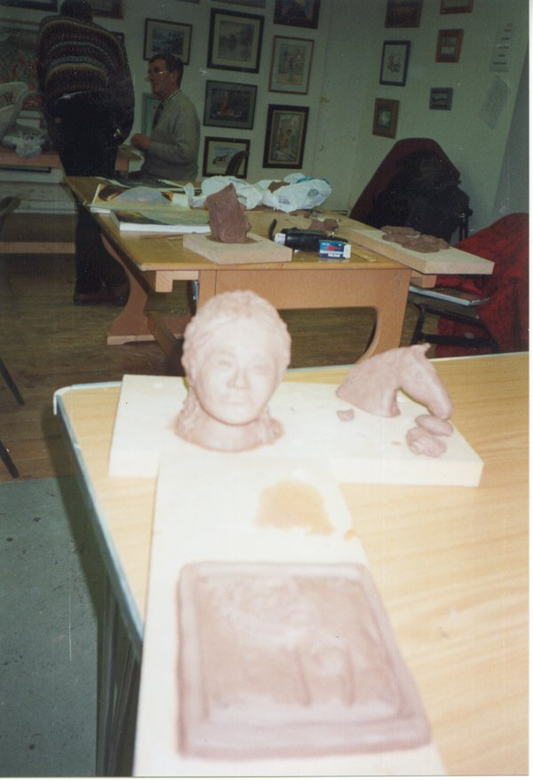

Visual Art
The gallery hosts an average of 12 exhibitions per year, covering all areas of the visual arts, painting, drawing, photographs, and sculpture. All the exhibitions are free admittance, which makes art accessible to everyone.
Theatre
There are a number of theatre groups based in South Tipperary.
STACK youth theatre is one of these, which has branches in both Cahir and Clonmel.

SCULPTURE CLASS